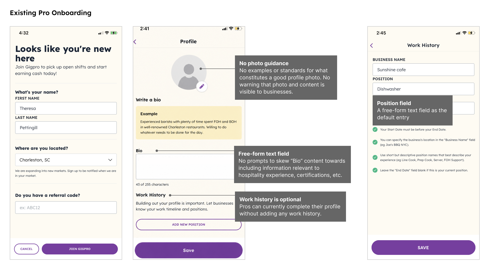
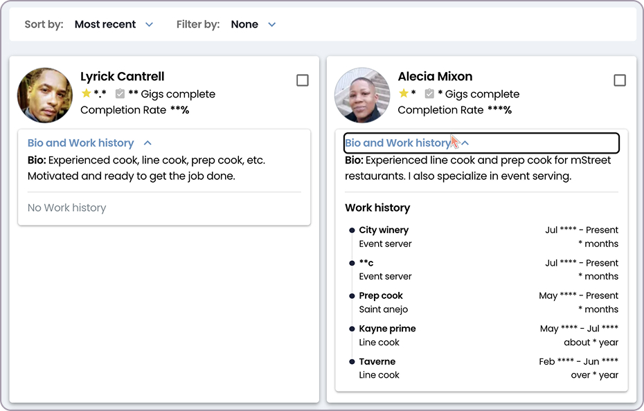
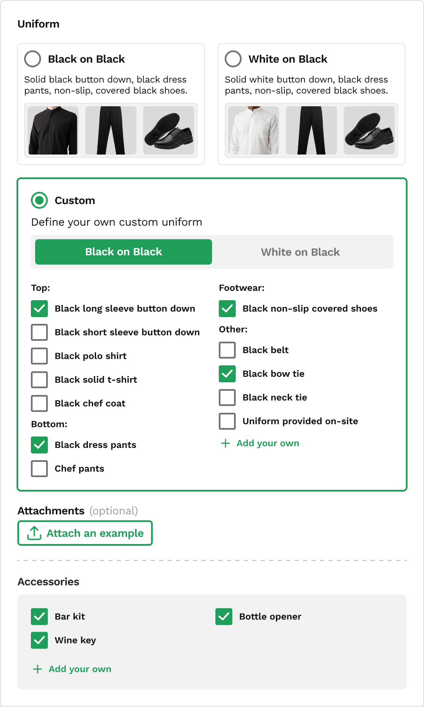
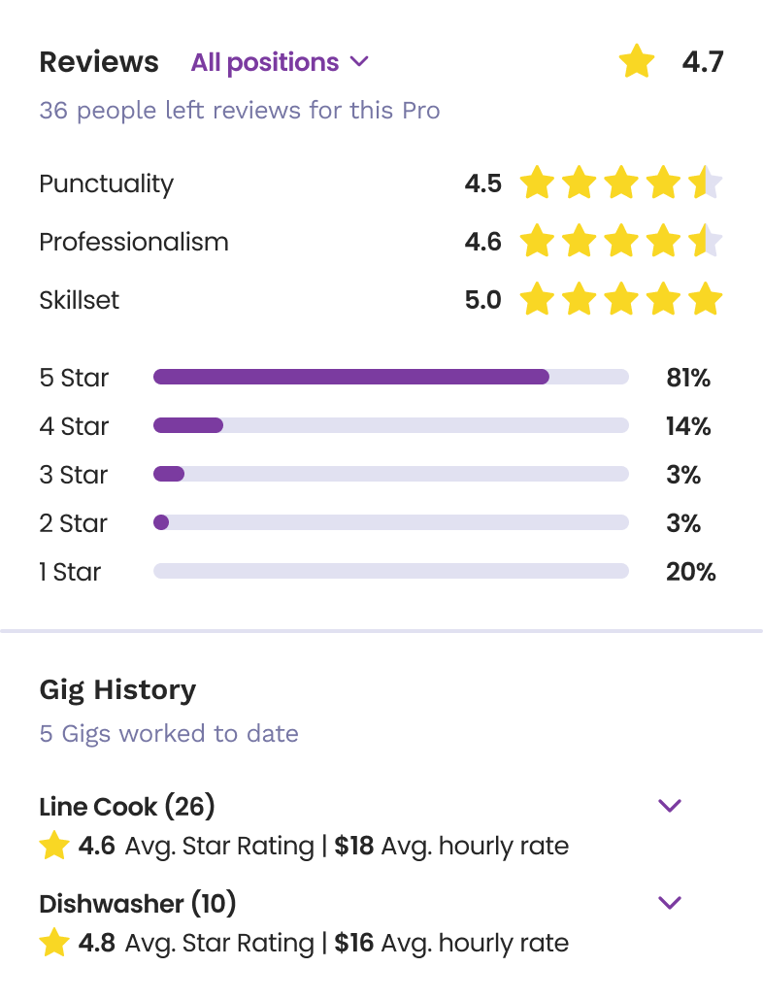
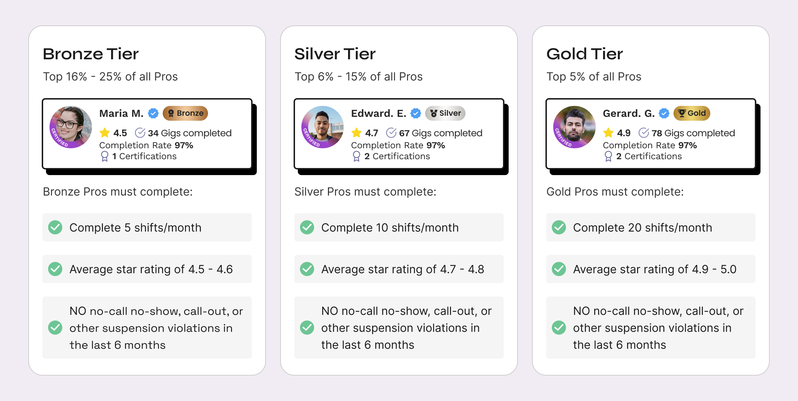
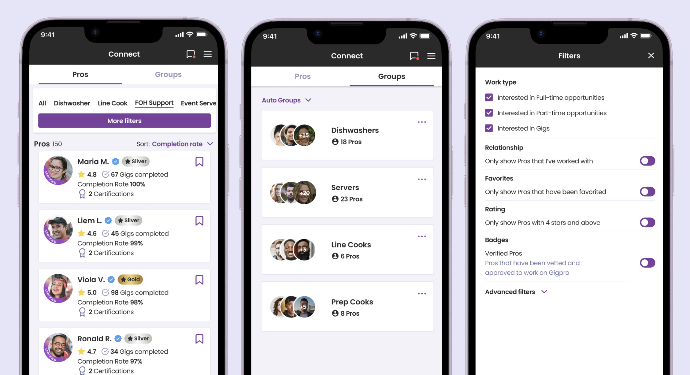

Gigpro → Qwick
Rebuilding trust in a staffing marketplace
From open applications to data-backed fulfillment.
Overview
Gigpro, now Qwick, was a hospitality staffing marketplace that connected businesses with independent workers, called Pros. Businesses posted shifts and selected from the Pros who applied, often with limited information about their experience, reliability, or professionalism.
As the marketplace grew, it became harder for businesses to identify strong candidates and avoid poor-fit bookings. No-shows, late cancellations, and inconsistent professionalism made businesses less confident in the platform. In research with churned businesses, 10 of 22 respondents cited insufficient training or professionalism as a reason they stopped using the platform.
Gigpro needed to do more to set businesses and Pros up for successful shifts. That meant setting clearer standards for Pros, giving businesses stronger signals before they booked, and creating more confident ways to hire.
The work came together around three connected areas:
| Area | What it included | What it helped businesses understand |
|---|---|---|
| Qualification | Onboarding, Pro Profiles, Pro Orientation, Skill Certificates, and Industry Certifications | Is this Pro ready and eligible for this shift? |
| Performance | Medal status, ratings, completion history, and policy standing | Has this Pro shown that they are dependable? |
| Hiring and fulfillment | Connect, Preferred Network, Direct Offers, Recommended Pros, Automatch, and Match | What is the best way to fill this shift? |
The following chapters show how these capabilities evolved, from stronger onboarding and performance signals to platform-led matching.
Qualification
2022–23
Building a clearer picture of who is ready to work
Before Gigpro could help businesses make better hiring decisions, it needed to define what a high-quality worker looked like on the platform. Although workers were called “Pros,” the onboarding experience did little to establish expectations, validate readiness, or create a meaningful standard for earning that title.
“This last pro showed up 20 minutes late, didn't even introduce themselves upon walking in, and then just disappeared in the middle of service before their scheduled shift was over.”
After hearing similar concerns from business accounts, I audited the Pro onboarding flow alongside the business experience for reviewing applicants. The question was simple: what should it mean to be a Pro, and how could the product make that clear before a business booked someone?
The original experience did not establish a clear qualification baseline and gave businesses very little to go off of.

At the time, Bio was the only required field when creating a Pro Profile.

Limited information carried into the hiring experience, making it difficult to compare applicants or assess fit.
Creating a stronger baseline
I redesigned the flow to capture the information businesses needed to assess fit, from relevant experience and availability to completed requirements and credentials. That gave the platform a stronger foundation for how Pros appeared in the hiring experience.
Onboarding introduced the information and readiness steps needed before a Pro could apply.
Bringing readiness into the hiring decision
The new onboarding inputs flowed directly into the business-facing Pro Profile. Instead of relying on a photo and freeform bio, businesses could compare applicants using more consistent information about relevant experience, availability, skills, and qualifications.
Structured onboarding data gave businesses a more consistent way to assess applicants.
This gave businesses a clearer picture of who they were considering before they booked. It also created the structured data the platform needed for later work, including Skill Certificates, industry requirements, performance signals, recommendations, and Match.
Adding verified qualifications
As the platform matured, I also designed ways to make verified capabilities and required credentials visible in the hiring experience.
- Skill Certificates showed capabilities evaluated by Gigpro’s Pro Success team.
- Industry Recognized Certifications allowed businesses to require role-, market-, or business-specific credentials and gave Pros a way to upload or complete needed certifications.

Verified capabilities and required credentials made eligibility visible at the point of booking.
Together with onboarding and profile data, these signals made it easier for businesses to see whether a Pro was prepared and eligible for a specific shift.
Setting clearer shift expectations
Verified qualifications made eligibility visible, but reliability also depended on clear expectations for each shift. Pros frequently arrived out of uniform, leading businesses to send them home and leaving shifts unfilled. I redesigned the posting flow to better guide businesses in defining shift-specific expectations, including uniforms, and make those requirements clear to Pros before they applied or confirmed.

Businesses could choose a preset uniform or define custom requirements down to the accessory, so expectations were clear before a Pro ever applied.
Reliability
2023–2024
Making a Pro’s track record easier to understand
Qualifications showed shift readiness. Performance history showed whether a Pro had consistently delivered. I expanded business reviews beyond a single score, adding feedback facets that gave businesses richer context on a Pro’s performance.

Facet ratings for punctuality, professionalism, and skillset gave businesses more useful context than a single overall score.
Those performance signals also informed Gigpro’s Medal Badge program, which recognized Pros based on shift activity, ratings, reliability, and policy standing. By making consistent performance visible, the program gave businesses another trust signal and gave Pros an incentive to improve, maintain their status, and stand out in the marketplace. In partnership with marketing, I designed how Bronze, Silver, and Gold status appeared across the Pro and business experiences.

Pro Medals gave businesses a quick view of a Pro’s track record, using shift history, ratings, reliability, and policy standing to make consistent performance easier to recognize.
Together, reviews and Medal status made performance easier to understand at the point of hiring. Qualifications showed whether a Pro could do the work. Performance signals showed whether they had demonstrated they could do it reliably.
Hiring
2024–26
Giving businesses better ways to hire
Stronger onboarding, clearer profiles, and visible performance signals gave businesses a more complete view of each Pro. The next challenge was helping them use that information to fill shifts with less effort.
Rather than moving straight from an open applicant pool to fully automated matching, we introduced new hiring options over time. Businesses could first rehire people they already trusted, then start with a stronger shortlist, and eventually rely on the platform to take on more of the fulfillment work.
Rehiring Pros they trusted
After a successful shift, businesses had no easy way to work with the same Pro again. Chat was limited to the shift window to protect both sides, so businesses posting a new gig had to hope that a Pro they trusted would see the shift, apply, and confirm before someone else.
I designed Connect to give businesses a place to find, save, and organize Pros they had worked with. Preferred Network turned those saved relationships into a hiring option, allowing businesses to post a shift directly to selected Pros or groups instead of opening it to the broader marketplace. Direct Offers made this even more immediate. Businesses could invite a known Pro directly, while Pros could confirm the shift without applying and waiting to be selected. Within two months of launch, Direct Offers accounted for 13% of paid gigs and had stronger completion rates than the open applicant flow.

Connect gave businesses a place to find, save, and organize Pros they wanted to work with again.
Preferred Network let businesses share shifts directly with selected Pros or groups instead of opening every shift to the broader marketplace.
Starting with stronger options
Once profile, qualification, and performance data were more reliable, I designed Recommended Pros to help businesses narrow the field faster.
Instead of making operators review every applicant manually, Recommended Pros surfaced a ranked shortlist above the general applicant pool. The list used signals such as completion rate, rank, and relevant certifications to identify stronger fits for a particular shift. Businesses could choose individual Pros or use Send offers to all when they needed to reach several qualified people quickly.
Recommended Pros was designed as an “easy button” for selection: a shortlist above the general applicant pool that surfaced the strongest fits for each shift.
Moving toward Match
Automatch was an early step toward platform-led fulfillment. Businesses could continue selecting Pros themselves, but if they did not make enough selections, the platform could prepare offers for matched Pros to help ensure the shift was filled.
I designed Automatch with review points so businesses could understand and influence what happened next. They received a reminder before offers were sent, could review the proposed queue, and could remove Pros they did not want contacted. Early results showed that platform-selected Pros had higher completion rates and stronger business ratings than manually selected Pros.
Automatch tested platform-led fulfillment while keeping businesses involved. If a shift was still unfilled, the platform prepared offers for matched Pros and gave businesses time to review the matches or remove Pros before offers were sent.
That work informed Match, which moved Gigpro beyond an open applicant marketplace. Businesses could rely on the platform to identify and fulfill shifts with qualified Pros, while still retaining the option to review selections, remove someone when needed, or use Direct Offers for a person they wanted specifically. Pros also moved from applying and waiting to receiving a match they could confirm directly.
By mid-2025 and early 2026, following Gigpro’s acquisition of Qwick, those efforts came together in Match. Businesses no longer had to sort through every applicant unless they wanted to, and Pros were no longer left feeling like they were shouting into the void. Instead, the platform could make the match and give both sides a clearer path to getting a shift filled.
Match let businesses rely on the platform to fill shifts without sorting through every applicant. Businesses could still review selections, remove Pros when needed, or use Direct Offers when they wanted to hire someone specific.
Match replaced the uncertainty of applying and waiting with a clear invitation to work. Pros could see shifts they were matched to, confirm instantly, and add them directly to their schedule.
Outcomes
Together, these changes gave businesses more confidence and control in hiring, helped qualified Pros stand out, and established the data foundation for platform-led fulfillment.
fewer no-shows
Improved onboarding and verification also reduced late cancellations by 28%.
of paid gigs via Direct Offers
Repeat hiring drove stronger completion than open-pool shifts.
Inputs for Match
Profile, onboarding, and credential data strengthened platform-led fulfillment.
Trust became something businesses could see and act on throughout the hiring experience.
Reflection
Trust was not restored through one feature. It came from a series of connected improvements that gave businesses clearer expectations, more reliable information, and better ways to hire.
The work showed me that platform-led fulfillment depends on more than a matching algorithm. It depends on reliable qualification and performance data, clear expectations for Pros, and enough business oversight for people to feel confident in the outcome.
By building those signals first, we were able to move from manual selection toward Match in a way that made hiring easier without making the experience feel like a black box.
Other Works